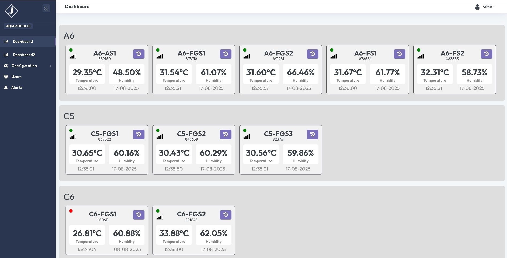

Custom e-paper display systems for real-time environmental monitoring, featuring temperature, humidity, and CO2 sensors with 4G connectivity and cloud data integration for industrial air quality assessment.

This comprehensive IoT project involved designing and developing customized e-paper driven Air Quality Monitoring (AQM) devices for industrial clients. The project required creating two distinct device variants with different sensor configurations, implementing real-time data visualization, 4G connectivity, and cloud-based monitoring systems for 41 deployed units across multiple locations.
In response to growing concerns about air quality in industrial environments, this system provides real-time monitoring of critical air quality parameters with data transmitted to cloud servers for centralized analysis and visualization. E-Paper display technology ensures readability in all lighting conditions while minimising power consumption.
Custom-designed low-power e-paper displays providing clear, readable environmental data with excellent visibility in various lighting conditions and ultra-low power consumption.
Two device variants: basic model with temperature & humidity sensors, and advanced model with additional CO2 level monitoring for comprehensive air quality assessment.
Integrated 4G communication enabling real-time data transmission to cloud platforms with signal strength monitoring and automatic reconnection capabilities.
Programmed using Arduino IDE with custom display rendering, sensor data processing, and communication protocols for reliable operation in industrial environments.
Real-time monitoring dashboard displaying data from all 41 deployed devices with historical tracking, alerts, and device status management capabilities.
Unique ID assignment and configuration management for individual device identification and centralized monitoring across multiple installation sites.
Custom graphics and text rendering using Arduino IDE, including shape drawing, font sizing, and pixel-perfect layouts optimised for e-paper display characteristics and readability in all ambient lighting conditions.
Real-time environmental data collection from temperature, humidity, and CO2 sensors with data validation, filtering, and formatting for display and transmission to cloud endpoints.
Implementation of AT command protocols for cellular communication, including signal strength monitoring (AT+CSQ), data transmission to cloud URLs, and connection reliability management with auto-reconnect logic.
Resolved hardware connectivity issues through SIM port cleaning and maintenance, fixed IMEI reset problems through code logic redesign, and improved signal reading accuracy through enhanced error handling.
Overcame font sizing and pixel format compatibility issues by selecting appropriate libraries and display parameters specific to the e-paper technology used.
Resolved intermittent signal reading issues through hardware maintenance, SIM port cleaning, and improved AT command implementation for consistent 4G connectivity.
Fixed automatic IMEI number reset problem by redesigning communication functions with enhanced logic and comprehensive error handling mechanisms.